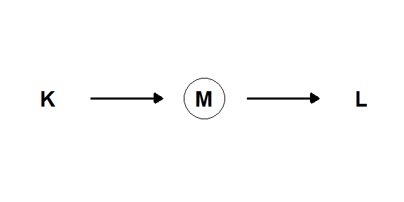
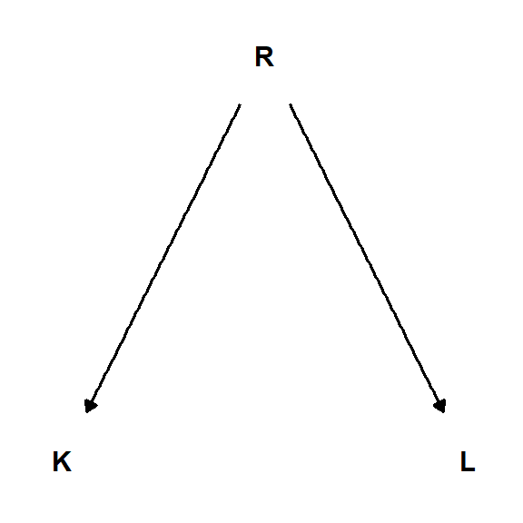
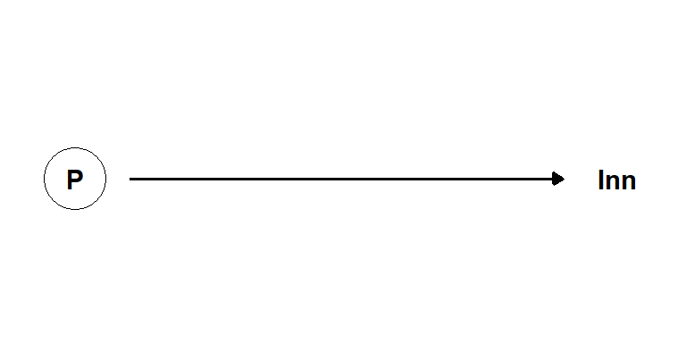
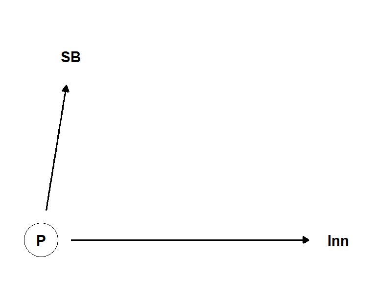

5 Fra sammenheng til kausalitet
Samtidig som vi vet at noen sammenhenger er spuriøse1 vet vi også at noen ting påvirker andre ting, det finnes kausalitet2. I et forsøk undersøker vi hvordan en ny medisin påvirker blodtrykket. En gruppe forsøkdeltakere blir tilfeldig inndelt i to grupper. Deltakere i den ene gruppen får den nye medisinen og deltakere i den andre gruppen får placebo. Inndeling av deltakere i gruppene er skjult for deltakere og forskere. I etterkant av intervensjonen måler vi blodtrykk og kan konstatere at deltakere som fått medisinen har lavere blodtrykk sammenlignet med placebo-gruppen. Forsøket inneholder noen komponenter som gjør at vi kan si at det finnes en kausal sammenheng mellom det å ta medisinen og det å få lavere blodtrykk. Hvis vi hadde muligheten å forandre på en variabel for deretter å måle utfallet i en annen variabel, under kontrollerte forhold så kan vi si at det finnes (eller ikke) en kausal sammenheng. Det å forandre en variabel (f.eks. konsentrasjonen av et medikament i blodet) kan kalles for å gjøre en intervensjon.
1 Spuriøs sammenheng er en sammenheng mellom to variabler som ikke har en kausal sammenheng.
2 Kausalitet er en sammenheng mellom to variabler hvor en variabel påvirker en annen.
I mange sammenhenger har vi ikke mulighet å forandre variabler ved å lage intervensjoner. Det kan for eksempel finnes etiske eller praktiske årsaker til dette. Men vi har fortsatt mulighet til å undersøke kausale sammenhenger. Som i eksemplet med medisin for lavere blodtrykk over så krever det noen antagelser. I et forsøk hvor vi intervenerer kan antagelser inkludere at forsøkdeltakere blir tilfeldig tildelt en gruppe og at forskere ikke vet hvilken pasient eller forsøkdeltakere som får den aktive behandlingen eller medisinen. Hvis disse antakelsene er sanne så kan vi med stor sikkerhet si at medisinen påvirket blodtrykket. I en forskningstudie hvor vi ikke har mulighet å intervenere har vi fortsatt mulighet å «kontrollere» for variabler som kan påvirke sammenhengen mellom to variabler som vi er interessert i. Vi kan identifisere variabler som vi bør kontrollere for ved hjelp av grafiske modeller. Disse modellene kan også gi innsikt i når vi ikke kan si at en sammenheng er årsaksbestemt.
Over har vi beskrevet to typer av studiedesign, en eksperimentell studie og en observasjonsstudie. I en eksperimentell studie gjennomfører vi en eller flere intervensjoner som forandrer variabler og vi kan derved estimere effekten av disse variablene på avhengige variabler. I en observasjonsstudie har vi ikke denne muligheten, her estimerer sammenhenger mellom variabler ved hjelp og trekker slutninger om kausalitet basert på antagelser om hvordan variabler henger sammen. I begge typer av studier kan vi si noe om kausale sammenhenger.
5.1 Eksperiment og kvasieksperiment
Et eksperiment kan brukes til å sammenligne intervensjoner. Vi sammenligner intervensjonene i en definert gruppe. Denne gruppen, eller populasjonen, kan som et eksempel være idrettsutøvere, og intervensjonene kan være to forskjellige treningsprogrammer hvor et program er et nytt program (N) og det andre er hva man vanligvis bruker, en slags kontrollprogram (K). Vi ønsker med vårt eksperiment å si noe om effekten av N på en bestemt variabel i gruppen idrettsutøvere. Vi rekrutterer en gruppe idrettsutøvere og deler inn dem i to undergrupper, N og K.
For å gjøre sammenligningen bestemmer vi et utfall (avhengig variabel), i eksemplet passer det fint å måle løpehastighet i en 3000-m test. Vi lar utøverne løpe testen i forkant av studien, ved tid 1 (\(t_1\)), og etter studien, ved tid 2 (\(t_2\)). Vi kan nå beregne en forandringskår (\(\delta\)). Hvor mye forandret seg hvert enkelt individ fra \(t_1\) til \(t_2\)?
\[\Delta = t_2 – t_1\]
I neste steg kan vi beregne effekten av N, det nye treningsprogrammet. For å beregne denne så trekker vi ifra forandringen i K (\(\Delta_K\)) fra effekten av N (\(\Delta_N\)), denne beregning gir oss den gjennomsnittlige intervensjonseffekten (GIE) av å gjennomføre N, sammenlignet med et kontrollprogram (K).
\[ \Delta_N - \Delta_K = \text{GIE}\]
For å si at den estimerte GIE er den kausale effekten av å gjennomføre N kreves noen grep og antagelser. Når vi delte inn deltakere i studien så må vi ta grep for å gi hvert deltakere samme sannsynlighet å ende opp i hver gruppe. Vi sikkerstille dette ved å randomisere forsøket. I et randomisert forsøk bruker man vanligvis et dataprogram som tilfeldig tildeler gruppetilhørighet til hvert individ. Inndelingen av gruppene påvirkes ikke av forskerne, deltakerne eller andre faktorer som samtidig kan påvirke resultatene. Dette er en aspekt av forsøket som gjør at vi kan kalle det for et eksperiment.
Et nærbeslektet design er en kvasieksperimentell studie. I en slik studie har noe ytterligere påvirket gruppeinndelingen og dermed påvirket effekten som er utfallet av studien. Et eksempel på en effekt som kan påvirke resultatene i en studie hvor en kvasieksperimentell design brukes er om inndelingen i grupper gir en overvekt av dårlig trente utøvere i den ene gruppen grunnet deltakernes preferanser. En dårlig trent individ kan forventes svare bedre på trening og hvis mange av disse er samlet i en gruppe forsvinner eller forsterkes effekten av intervensjonen. Vi kan forstå denne situasjonen enda bedre ved hjelp av en figur (Figur 5.1).
Det randomiserte forsøket (A i figuren over) inneholder ikke noen mulige variabler som kan påvirke gruppeinndeling annet enn den tilfeldige tildelingen av gruppetilhørighet (randomisering, R). I det kvasieksperimentelle designet (B i figuren over) påvirker den uobserverte variabelen K gruppetilhørighet, da deltakere får mulighet å velge gruppe selve. Variabelen K påvirker også forandring i prestasjon (P) ved at deltakere velger gruppe basert på noen karakteristikk, som for eksempel hvor trent de er.
5.2 Grafiske modeller for kausal analyse
I eksemplet over bruker vi en grafisk modell til å beskrive hvordan forskjellige variabler henger sammen. Denne typen av modell har navnet Directed Acyclic Graph (DAG, “rettet asyklisk graf” på norsk), noe som beskriver modellens egenskaper. Modellen viser retningen av en “effekt” mellom to variabler (directed), og en variabel kan ikke påvirke seg selv, modellen er ikke syklisk (acyclic). Vi kan tenke på hele grafen som forhold mellom variabler ved et bestemt tidspunkt.
Den grafiske modellen inneholder noder (nodes), disse bruker vi for å plassere inn variabler, og kanter (edges) som vi bruker for å beskrive retning på effekter, hvordan en variabel påvirker en annen. I figuren over (Figur 5.1) sier vi at G (gruppetilhørighet) er en variabel (nod) som påvirker P direkte ved en kobling mellom de to.
Denne typen av grafisk modell har noen begrensninger, den forteller for eksempel ikke om hvordan variabler påvirker hverandre. En effekt, som beskrevet i en DAG, ser lik ut når variablene er kategoriske og kontinuerlige. En DAG beskriver ikke heller styrken i en sammenheng. For eksempel er det å kjøpe en lodd \(L\) kausalt sammenkoblet med å vinne en million \(V\) (\(L \rightarrow V\)), men sammenhenger er ikke så sterk. Så vad kan vi bruke en DAG til?
En DAG gir oss muligheten til å koble sammen en statistisk modell, for eksempel en regresjonsmodell, med en vitenskapelig modell. Den vitenskaplige modellen, illustrert gjennom en DAG, viser hvordan vi anser at variabler henger sammen og hvordan vi kan tolke, eller forandre den statistiske modellen for å la den beskrive kausale effekter. Den vitenskaplige modellen bygger på antagelser. Når vi beskriver en kausal effekt betyr det at vi sier at den er kausal under betingelser at de antagelser vi stiller opp er sanne. Beskrevet på denne måten er det tydelig at vi ikke kan finne kausale sammenhenger hvis vi bare analyserer dataene, vi trenger en vitenskaplig modell i tillegg (Pearl 2019).
Pearl (2018; 2019) er en sentral bidragsyter til feltet kausal inferens.
Pearl, Judea, and Dana Mackenzie. 2018. The Book of Why: The New Science of Cause and Effect. New York: Basic Books.
Pearl, Judea. 2019. “The Seven Tools of Causal Inference, with Reflections on Machine Learning.” Communications of the ACM 62 (3): 54–60. https://doi.org/10.1145/3241036.
5.3 Gaffel, rør, collider og etterkommer
Når vi bygger, eller leser en DAG kan vi identifisere følgende sammenhenger mellom variabler, en gaffel, et rør, en collider og en etterkommer (Figur 5.2). I en “gaffel” påvirker en variabel to andre variabler. Denne strukturen så vi i eksemplet over hvor en tredje variabel ble introdusert i eksperimentet ved at forsøkdeltakere fikk mulighet å velge gruppe selv. Denne tredje variabelen introduserer noe som kalles for en “konfunder” effekt3, en variabel som påvirker både en mulig kausal variabel og variabelen som den i sin tur påvirker.
3 Les mer i Røislien and Kvaløy (2021) som gir oss norsk oversettelse av de engelske begrepene.
Røislien, Jo, and Jan Terje Kvaløy. 2021. “Trekantdrama.” Tidsskrift for Den Norske Legeforening. https://doi.org/10.4045/tidsskr.21.0075.
I et “rør” påvirker en variabel, x, en annen variabel, y, gjennom en tredje variabel z (Figur 5.2). Denne strukturen er en del i en struktur som beskrives i (Røislien and Kvaløy 2021) som en mediatoreffekt. Som vi skal se under kan vi også identifisere røret i et eksperiment hvor effekten av en intervensjon på en variabel påvirker en annen variabel gjennom en tredje variabel.
En collider er en variabel som har to “foreldrer”. To variabler bidrar til å påvirke en tredje variabel. En norsk benevning av collider finnes ikke så vi låner det engelske begrepet som antyder at noe om en kollisjon. To effekter kolliderer i en tredje variabel. Under vil vi se hvordan en collider kan bidra til å skape en spuriøs sammenheng mellom to variabler som ikke er kausalt sammenkoblet.
Til sist kan vi identifisere en etterkommer (Figur 5.2). En etterkommer er en variabel som påvirkes av en annen variabel. I en DAG kan vi identifisere en etterkommer ved at en variabel har en foreldervariabel. En etterkommer er et speilbilde av forelderen, og vi kan si at variabelen er en konsekvens av forelderen.

5.3.1 Konfunderte effekter
Som vi allerede konstatert over så er en konfunder (Z) en variabel som påvirker både en mulig kausal variabel (X) og variabelen som vi tror at den i sin tur påvirker (Y, se Figur 5.3). Gaffelen som oppstår i en slik situasjon forsterker sammenhengen mellom X og Y. Når vi i en regresjonsmodell bare måler sammenhengen mellom X og Y så vil vi se en sterk sammenheng, men gjennom å “kontrollere” for konfunderen så vil vi se at sammenhengen mellom X og Y forsvinner, eller blir svakere. Konfunderen er en variabel som vi bør kontrollere for i en statistisk modell for å kunne si noe om en kausal sammenheng mellom X og Y.
Vi kan illustrerer dette ved hjelp av en simulering. Vi lar \(X\) og \(Y\) være to uavhengige variabler, \(Z\) er en konfunder som påvirker både X og Y. Den eneste uavhengige variabelen i dette systemet er \(Z\). Her under sier vi at \(Z\) er en normalfordelt variabel med gjennomsnitt 0 og standardavvik 1. \(X\) er en variabel som for hvert observasjon har en verdi som er trukket fra en normalfordeling med gjennomsnitt \(Z\) og standardavvik 1. \(Y\) er en variabel som for hvert observasjon har en verdi som er trukket fra en normalfordeling med gjennomsnitt \(Z\) og standardavvik 1. Vi kan nå se på sammenhengen mellom \(X\) og \(Y\) og sammenhengen mellom \(X\) og \(Y\) når vi kontrollerer for \(Z\).
\[\begin{align} Z &\sim N(0, 1) \\ X &\leftarrow N(Z, 1) \\ Y &\leftarrow N(Z,1) \end{align}\]
I den første modellen bruker vi \(Y\) som den avhengige variabelen og \(X\) som den uavhengige variabelen. I den andre modellen bruker vi \(Y\) som den avhengige variabelen og \(X\) som den uavhengig variabel, men vi kontrollerer samtidig for \(Z\).
\[\begin{align} \text{Modell 1:} \qquad Y &= \beta_0 + \beta_1 X \\ \text{Modell 2:} \qquad Y &= \beta_0 + \beta_1 X + \beta_2 Z \end{align}\]
| Modell | Koeffisient | Estimat | Standardfeil |
|---|---|---|---|
| 1 | β1 |
0.53 | 0.03 |
| 2 | β1 |
0.02 | 0.03 |
Når vi evaluerer koeffisientene fra modellen ser vi at sammenhengen mellom \(Y\) og \(X\) forandres når vi inkluderer \(Z\) i modellen (tbl-konfunder). I modell 1 er sammenhengen mellom variablene er sterk, vi kan lese dette som at sammenhengen tilsvarer 19 standardfeil (\(\frac{Estimat}{Standardfeil}\)). Når vi introduserer Z i modell 2 ser vi at sammenhengen mellom X og Y forsvinner, her er effekten mindre enn en standardfeil (0.7).
Vi kan forklare dette med at vi gjennom å kontrollere for \(Z\) har målt sammenhengen mellom \(X\) og \(Y\) som ikke er forurenset av konfunderen. Dette er det samme som at kontrollere for \(Z\), eller å “blokkere” effekten av \(Z\) på \(Y\). I praksis måler vi, ved hjelp av regresjonsmodellen effekten av \(X\) på \(Y\) på hvert nivå av \(Z\).
5.3.2 Konfounder, et eksempel
I en observasjonstudie undersøker vi sammenhengen mellom inntak av kaffe og risiko for lungekreft. I forkant av datainnsamling ser vi på sammenhengen som enkel (Figur 5.4), og den kan forklares med et mystisk molekyl i kaffen som øker risikoen for kreft, og tydeligvis, særlig lungekreft. Vår observasjonstudie bekrefter sammenhengen.

Men, sier du sikkert, kan ikke det å drikke kaffe være assosiert med andre ting som også øker risikoen for lungekreft? Det kan være at de som drikker mye kaffe også røyker mye, og det er røyking som øker risikoen for lungekreft. En oppdatert modell for sammenhengen mellom kaffe og lungekreft inkluderer røyking som en konfunder (Figur 5.5). I denne modellen ser vi at røyking påvirker både inntak av kaffe og risiko for lungekreft. Når vi kontrollerer for røyking i en statistisk modell så vil vi se at sammenhengen mellom kaffe og lungekreft forsvinner. Det er akkurat hva man gjorde i en meta-analyse som ble publisert i 2016 (Galarraga and Boffetta 2016). Når man kontrollerte for røyking så forsvant sammenhengen mellom kaffeinntak og lungekreft.
Galarraga, Vania, and Paolo Boffetta. 2016. “Coffee Drinking and Risk of Lung Cancer—a Meta-Analysis.” Cancer Epidemiology, Biomarkers & Prevention 25 (6): 951–57. https://doi.org/10.1158/1055-9965.EPI-15-0727.

Det å kontrollere for en potensiell konfunder er en viktig del i en statistisk analyse. I en regresjonsmodell som beskriver en observasjonstudie kan vi kontrollere for en konfunder ved å inkludere den i modellen. I en eksperimentell studie kan vi kontrollere for en konfunder ved å randomisere forsøket.
5.3.3 Rør og mediatoreffekter
Effekten av en spesifikk intervensjon gir ikke alltid en direkte effekt på en avhengig variabel som vi er interesserte av. Isteden kan effekten av intervensjonen påvirke en annen variabel som i sin tur påvirker den avhengige variabelen. Dette kalles for en mediatoreffekt, noe som opptrer i et “rør” i en DAG. I eksemplet med en konfunder såg vi hvordan det å kontrollere for effekten av konfunderen ga oss den sanne kausale effekten mellom to variabler. Når vi har å gjøre med mediatoreffekter kan vi derimot lage trøbbel hvis vi prøver å kontrollere for en slik variabel.
La oss si at \(X\) er en intervensjon som vi tror påvirker \(Y\) gjennom en tredje variabel \(Z\). Vi kan simulere data som gir oss forholdet \(X \rightarrow Z \rightarrow Y\) ved å si at \(X\) er en normalfordelt variabel med gjennomsnitt 0 og et standardavvik på 1 (\(X \sim N(0,1)\)). Verdiene på \(Z_i\) oppstår gjennom at vi trekker de fra en fordeling med gjennomsnitt \(X_i\) og en standardavvik på 1, og på den samme måten oppstår verdiene på \(Y_i\) ved at vi trekker de fra en fordeling med gjennomsnitt \(Z_i\) og standardavvik 1. I en regresjonsmodell kan vi begynne med og undersøke effekten av av \(X\) på \(Y\). I denne modellen (Modell 1) ser vi den totale effekten av intervensjonen på \(Y\) i tillegg til noe støy. Når vi prøver å legge til \(Z\) i en regresjonsmodell forsvinner effekten av \(X\) (Modell 2; Figur 5.7).
\[\begin{align} \text{Modell 1:} \qquad Y &= \beta_0 + \beta_1 X \\ \text{Modell 2:} \qquad Y &= \beta_0 + \beta_1 X + \beta_2 Z \end{align}\]
| Modell | Koeffisient | Estimat | Standardfeil |
|---|---|---|---|
| 1 | β1 |
1.06 | 0.05 |
| 2 | β1 |
0.03 | 0.04 |
| 2 | β2 |
1.02 | 0.03 |
Det å kontrollere for en medierende variabel kalles for post-tretament bias, en metodisk feil som hindrer oss fra å tolke den riktige, kausale effekten av \(X\) på \(Y\). I eksemplet over ser vi hvordan effekten av intervensjonen forsvinner når vi kontrollerer for den medierende variabelen. Dette er fordi vi har kontrollert for en variabel som er en del av effekten av intervensjonen på den avhengige variabelen, den variabel som vi legger til i regresjonsmodellen spiser opp all effekt. Sagt på en annen måte, vi lærer inget nytt om \(X\) på \(Y\) når vi kjenner til \(Z\), all effekt som \(Y\) har fått fra \(Z\) kommer fra \(X\).
En post-treatment bias kan også tilsynelatende forsterke effekter. La oss si at vi gjennomfører en intervensjon i en randomisert forsøk. En av to grupper får et nytt treningsprogram og den andre gruppen gjennomfører kontrolltrening. Vi er intressert i å studere effekten av treningsprogrammet på VO2maks. Treningsprogrammet er hardt! Noe som leder til at deltakere i studien ikke evner til å gjennomføre alle øktene. I gjennomsnitt gjennomfører kontrollgruppen 89% av øktene, men i gjennomsnitt gjennomfører deltakere i intervensjongruppen bare 72% av øktene. Når vi gjennomfører analysen ønsker vi å estimere effekten hos de som gjennomført minst 85% av øktene. Vi estimerer effekten av intervensjonen til å gi 9.3 ml-1 kg-1 min-1 høyere VO2maks som svar på intervensjonen, sammenlignet med kontrollgruppen.

Vi har nå et estimat som er for høyt, vi har ikke tatt hensyn til at det er en sammenheng mellom intervensjonen og gjennomføringen av treningsprogrammet. Vi har introdusert en post-treatment bias og vi har ikke beskrevet den totale effekten av intervensjonen på VO2maks.
5.3.4 Collider og seleksjonsbias
En collider er en variabel som påvirkes av to uavhengige variabler. I en DAG kan vi identifisere en collider \(Z\) ved at to variabler (\(X\) og \(Y\)) har en felles etterkommer. Når vi analyserer et datasett hvor det finnes en collider risikerer vi å finne en spuriøs sammenheng mellom \(X\) og \(Y\). Vi simulerer data! \(X\) og \(Y\) er avhengige hverandre og simuleres som å komme fra en normalfordeling med gjennomsnitt 0 og standardavvik 1 (\(X\sim N(0,1),\quad Y\sim N(0,1)\)). Collideren påvirkes av begge variablene, vi simulerer den som at vi trekker tall fra en normalfordeling med gjennomsnitt \(X_i + Y_i\) og et standardavvik på 1.
Som vi ser i figuren under så er \(X\) assosiert med \(Z\) og \(Y\) er assosiert med \(Z\). Når vi ser på sammenhengen mellom \(X\) og \(Y\) så ser vi at den er ikke-eksisterende. Hva skjer hvis vi analyserer sammenhengen mellom \(X\) og \(Y\) og kontrollerer for \(Z\)?

I en enkel regresjonsmodell hvor \(Y = \beta_0 + \beta_1 \times X + \beta_2 \times Z\) ser vi at sammenhengen mellom \(X\) og \(Y\) er tilsynelatende sterk.
| Koeffisient | Estimat | Standardfeil |
|---|---|---|
β1 (x) |
−0.46 | 0.03 |
β2 (z) |
0.48 | 0.02 |
Det å “kontrollere” for en collider introduserer altså sammenhenger som ikke er kausale i en analyse. Vi minner oss igjen på hva en kausal sammenheng er; hvis vi har mulighet å forandre \(X\) så vil \(Y\) endre seg, hvis det finnes en kausal sammenheng mellom de to. I vårt eksempel så er det ingen kausal sammenheng mellom \(X\) og \(Y\), sammenhengen som vi måler ved hjelp av regresjonsmodellen er helt spuriøs.
Det finnes situasjoner når data påvirkes av en collider som en konsekvens av hvordan vi samler inn data. I en studie hvor vi ser på sammenhengen mellom VO2maks og utnyttelsegrad (laktatterskel som en % av VO2maks) i en gruppe av elitesyklister så kan vi se at det er en negativ sammenheng mellom variablene (Figur 5.10) sammenheng mellom de to variablene. Hvis vi tolker denne sammenhengen som kausal så kan vi kanskje si at syklister som har høyere VO2maks forverrer sin laktatterskel. Men det er ikke tilfelle, det er en collider som påvirker begge variablene. Syklister som har høyere VO2maks og eller høyere laktatterskel blir selektert til å være med i vårt datasett. Vi har interessert oss for å studerer elitesykklister og har introdusert noe som kalles for seleksjonsbias i vår analyse.

Hvis vi er interessert i den kausale sammenhengen mellom VO2maks og laktatterskel så må vi samle inn data på en annen måte. Når vi bare studerer elitesyklister er det det samme som å “kontrollere” for en collider i en regresjonsanalyse, collideren i dette tilfelle er prestasjon. De som presterer best er de som maksimerer summen av underliggende faktorer til prestasjon. Hvis se ser på den totale sammenheng mellom variablene som vi studerte over ser vi ingen sammenheng mellom variablene (Figur 5.11). Iblant elitesyklister er sammenhengen mellom variablene en spuriøs sammenheng.

Dataene over er simulerte men problemet er kjent, og samtidig ikke kjent innad idrettsvitenskapen. Til tross for at mye er skrevet om seleksjonsbias (Borgen 2018) fortsetter vi se eksempler på analyser som ikke vurderer seleksjonsbias i toppidrettforskning som en mulig forklaringsmodell.
Borgen, Nicolai T. 2018. “Running Performance, VO2max, and Running Economy: The Widespread Issue of Endogenous Selection Bias.” Sports Medicine 48 (5): 1049–58. https://doi.org/10.1007/s40279-017-0789-9.
5.3.5 Etterkommer
En etterkommer er en variabel som påvirkes av en eller flere foreldre. Når vi er interessert i å studere kausale effekter så må vi behandle en etterkommer på samme måte som vi behandler en konfunder, collider eller mediatorvariabel. I eksemplene i Figur 5.12 ser vi hvordan en etterkommer kan representere en ikke-observert variabel (Z). D har i disse eksemplene den samme funksjonen som Z.

5.4 Kausal analyse, et eksempel
I dataene som vi finner i fotball_1_2_3.csv så har vi muligheten å undersøke effektene av spillerprestasjon på årsinntekt. Dataene har blitt presentert i Thrane (2019) hvor man undersøkte hvorvidt effekten av forskjellige uavhengige variabler, som spillerprestasjon og landslagsspill forklarer en spillers markedsverdi og årsinntekt. De norske dataene er unike i den forstand at man faktisk har data på årsinntekt.
Vi skal nå resonnere kring en kausal analyse av dataene. Vi er interesserte i variabelen årsinntekt som en avhengig variabel og spillerprestasjon, landslagsspill, nasjonalitet og klubbens prestasjon som uavhengige variabler. Vi starter med en enkel DAG for å illustrerer våre antagelser (Figur 5.13). I en enkel modell tenker vi oss at spillerprestasjon (P) er variabel som påvirker inntekt. I dataene er inntekt innhentet i 2015, og spillerprestasjon er målt i 2014 (Thrane 2019). På denne måten kan vi se på variablene som tidsmessig ordnet, noe som understreker antagelsen om den kausale retningen mellom variablene, prestasjon påvirker inntekt. Prestasjonsvariabelen er ikke direkte observert da dataene ikke inneholder en variabel som samlet måler prestasjon, dette markerer vi ved å sette en ring rundt variabelen i figuren.

I dataene finner vi flere variabler som er etterkommere av en ikke observert prestasjonvariabel som spilletide, antall mål, antall assist og landslagsspill. Vi kan tenke oss at disse variablene er en speilbilde av prestasjonvariabelen. Vi prøver å sette inn en av to av disse variablene i modellen.
En spillers prestasjon virker gjennom variablene antall mål (AM) og spilletid (SpT) på årsinntekt. Vi kan tenke oss at en spiller som scorer mange mål og spiller mye vil ha en høyere inntekt. Begge variablene er etterkommere av prestasjonvariabelen. Hvis vi kontrollerer for en av disse variablene i en regresjonsmodell så vil vi ikke få en riktig estimat av den totale effekten av prestasjon på inntekt. I tillegg vil antall mål ikke være en god indikator for prestasjon i alle spillerposisjoner (Thrane 2019).
Thrane, Christer. 2019. “Performance and Actual Pay in Norwegian Soccer.” Journal of Sports Economics 20 (8): 1051–65. https://doi.org/10.1177/1527002519851146.
En mulighet er å bruke spillerbørs som en variabel som samler effekten av prestasjonsvariabler i en variabel. Spillerbørsen er en subjektiv rating av spillernes prestasjon gjennomført an journalister og eksperter (Thrane 2019). Vi kan tenke oss at spillerbørs er en variabel som er en etterkommer av prestasjonvariabelen og vi kan bruke den som en “proxy” for spillerprestasjon.

Bedre spillere blir sannsynligvis rekruttert til klubber med evne å betale høyere lønn. Men vi kan tenke oss at rekruttering til klubben skjer på tidligere meritter (historisk prestasjon HP). Hvilken klubb (K) man spiller på kan påvirke prestasjonen, det å spille med bedre medspillere kan bidra til at prestasjonen går opp, og dermed også spillerbørsrating. Klubber har også ulik evne til å betale lønn, dette gjør klubben til en konfunder i analysen. En annen konfunder kan vare alder, eldre spillere har høyere lønn enn yngre spillere, alder og erfarenhet påvirker også prestasjon, til en viss nivå. Når alder blir høyere så vil prestasjonen gå ned. Vår DAG trenger ikke å ta hensyn til en ikke-lineær sammenheng mellom alder og prestasjon, vi kan tenke oss at alder er en konfunder som påvirker prestasjon og inntekt.

Hvis våre antagelser kan sammenfattes som i Figur 5.16 så kan vi bruke en regresjonsmodell for å estimere effekten av spillerprestasjon på årsinntekt ved å se på effekten av spillerbørs på inntekt når vi samtidig inkluderer klubb og alder i modellen. Men som vi har sett frem til nå, dette er ikke en lett oppgave, vi har flere effekter som kan påvirke estimatet, noen av dem er ikke observerte. Hvordan vil du for eksempel plassere inn nasjonalitet og landslagsspill i modellen? Spillerbørs er kanskje ikke heller en variabel som utelukkende måler prestasjon, kanskje påvirkes eksperters subjektive rating av historisk prestasjon og forventninger?
Dette eksemplet viser på at en kausal analyse er mulig men krever at vi tenker nøye igjennom hvilke variabler som bør inngå i analysen og hvordan de påvirker modellen, som konfunder, collider eller mediator og etterkommere. Kausale sammenhenger oppdages ikke i dataene alene.